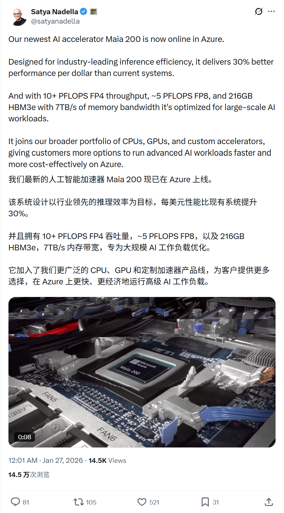
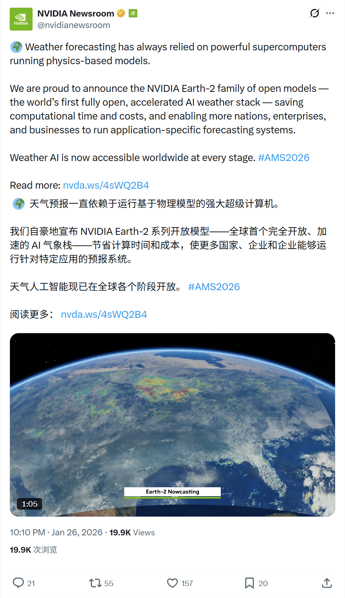
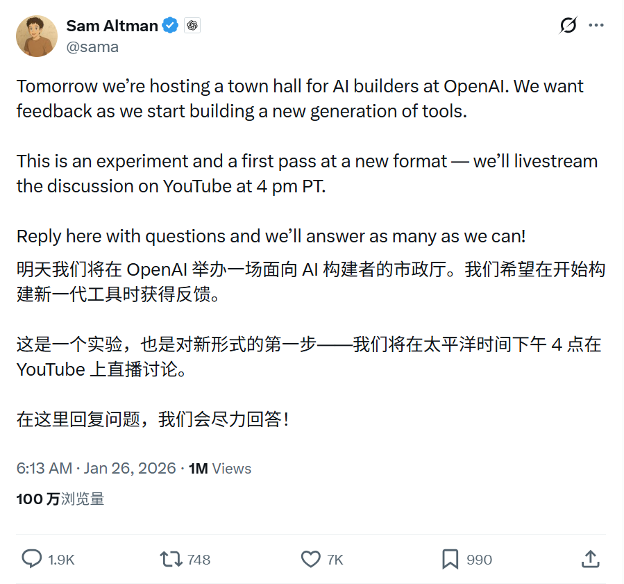
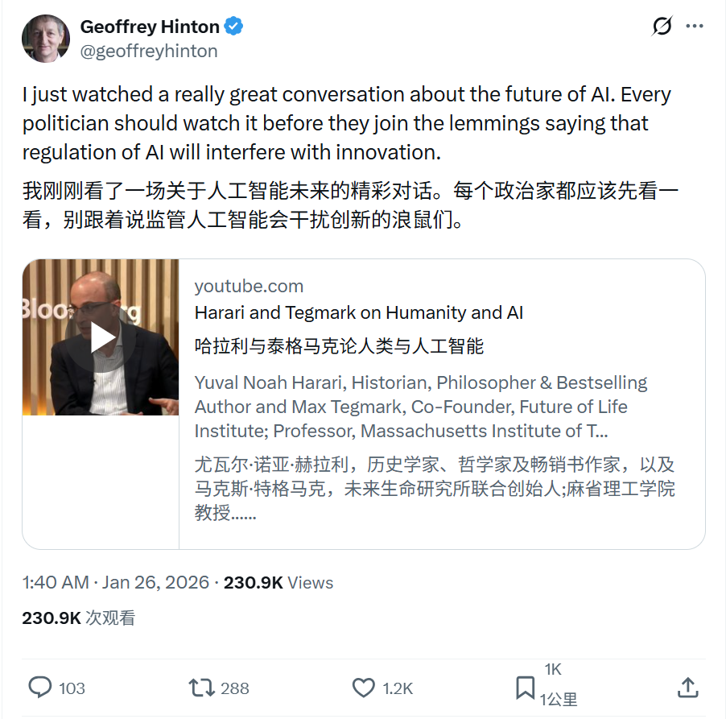
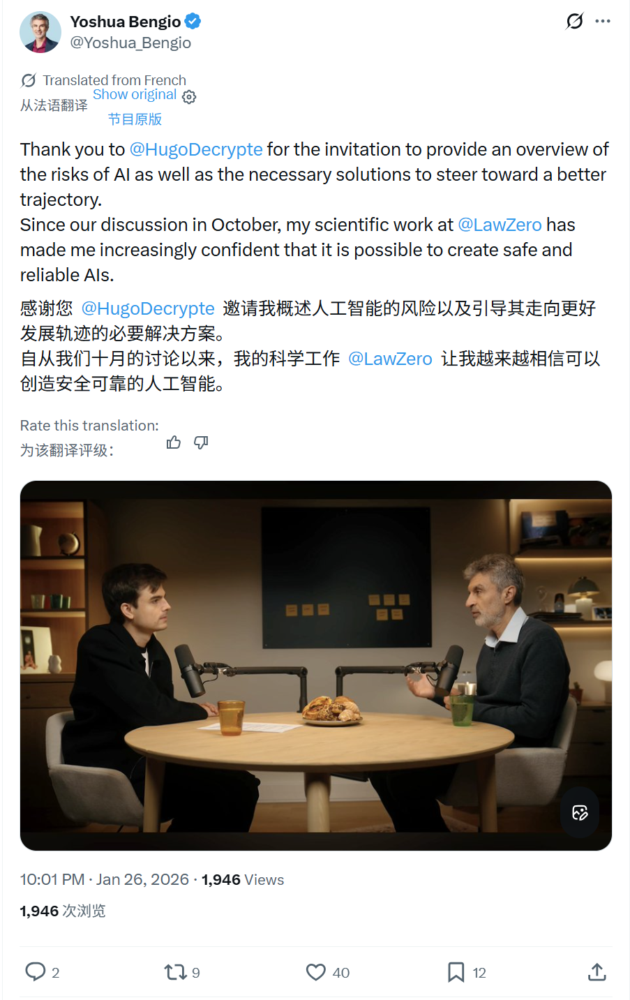

2026/01/26 硅谷AI圈动态
过去24小时，硅谷AI大佬在讨论什么
数据来源：X(twitter)平台实时推文
 小禾说AI (公众号)
清华小禾说AI (视频号)
小禾说AI (公众号)
清华小禾说AI (视频号)
📊 总览
过去24小时，正值周末，硅谷AI圈相对平静。最重磅的新闻是Microsoft宣布Maia 200 AI芯片正式上线Azure。此外，Sam Altman预告了OpenAI即将举办的社区活动，而Geoffrey Hinton和Yoshua Bengio两位图灵奖得主，分别就AI监管和安全发表了重要观点。无其他重大AI产品更新。
| 主题 | 关键事件 |
|---|---|
| Microsoft | Maia 200 AI加速器 (芯片) 上线Azure，专为推理优化，提升性价比 |
| NVIDIA | Earth-2开放天气AI模型栈 |
| OpenAI | Sam Altman宣布举办AI Builders Town Hall，征求社区反馈 |
| AI观点 | Geoffrey Hinton呼吁政客关注AI监管，避免阻碍创新 |
| AI安全 | Yoshua Bengio分享访谈，表达对构建可靠AI的信心 |
1
Microsoft - Maia 200 AI加速器上线
🚀 核心内容
- 正式上线： Maia 200 AI加速器现已在Azure上线，专为AI推理工作负载优化。
- 性能提升： 提供比前代更好的性价比（提升30%），以及10+ PFLOPS的FP4吞吐量。
- 关于Maia 200： 它是微软为了不只依赖英伟达，自研的“AI专用算力芯片”，主要用于大规模 AI 模型的训练和推理
- 意义： 标志着微软在AI芯片领域的自研能力进一步增强，有望降低AI推理成本，提升服务效率。
📸 原帖截图

2
NVIDIA - Earth-2开放天气AI模型栈
🚀 核心内容
- 关于Earth-2： 推出Earth-2系列开放模型，这是全球首个完全开放、加速的AI气象模型栈。
- 核心优势： 相比传统基于物理模型的超级计算机预报，Earth-2能显著节省计算时间和成本。
- 意义： 使更多国家、企业能够运行特定的气象预报系统，实现全球范围内的气象AI普及。
📸 原帖截图

3
OpenAI - AI Builders Town Hall预告
🚀 核心内容
- 活动预告： 宣布将于太平洋时间1月26日下午4点（北京时间1月27日早8点）举办“AI Builders Town Hall”。
- 会议议程： 将在 YouTube 直播讨论新工具的开发进展。
- 社区互动： 将积极征求社区的问题和反馈，以改进产品。
📸 原帖截图

4
AI观点 - 呼吁关注AI监管与创新
🚀 核心内容
- 推荐对话： 推荐了一场关于人工智能未来的深度对话。
- 监管观点： 呼吁政治家们关注AI监管问题，并警告要避免因“羊群效应”而制定阻碍创新的政策。
📸 原帖截图

5
AI安全 - 构建可靠AI的信心
🚀 核心内容
- 访谈分享： 分享了一篇法语访谈内容。
- 风险与安全： 深入讨论了AI可能带来的风险以及相应的安全解决方案。
- 未来展望： 表达了对未来构建安全、可靠的人工智能系统越来越有信心。
📸 原帖截图
